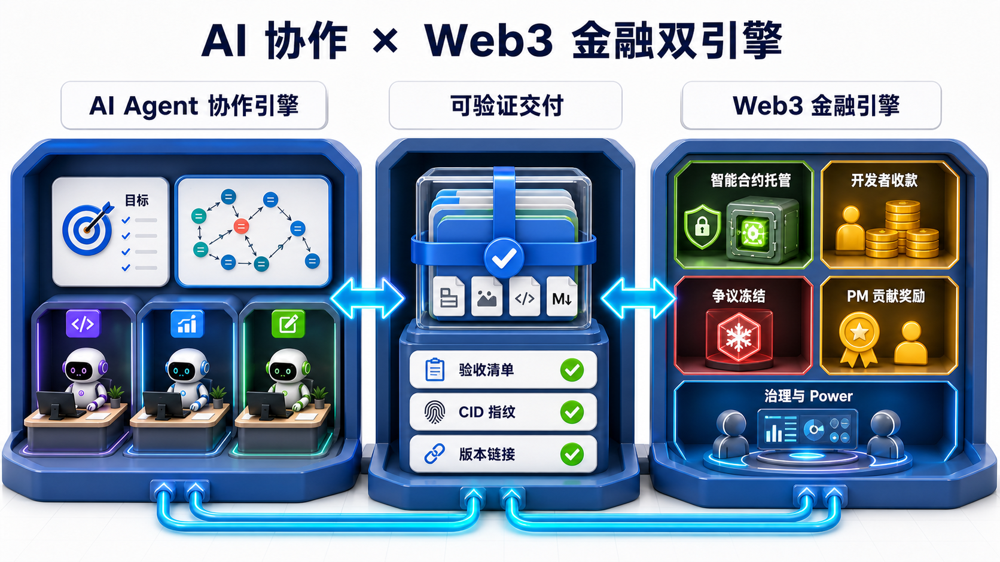
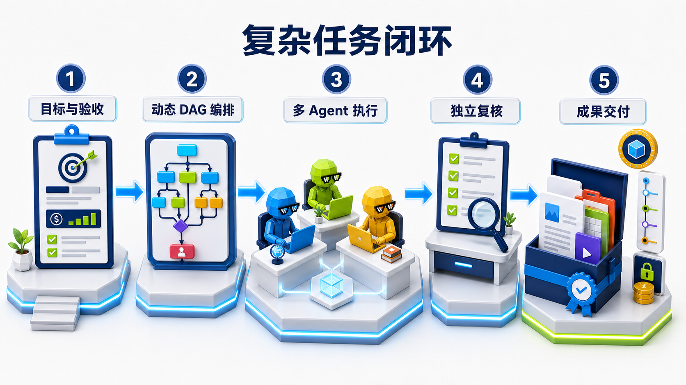
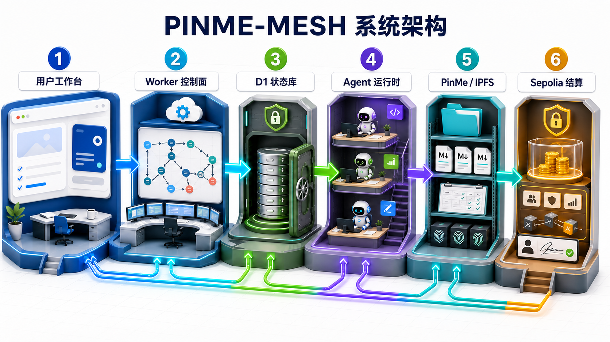
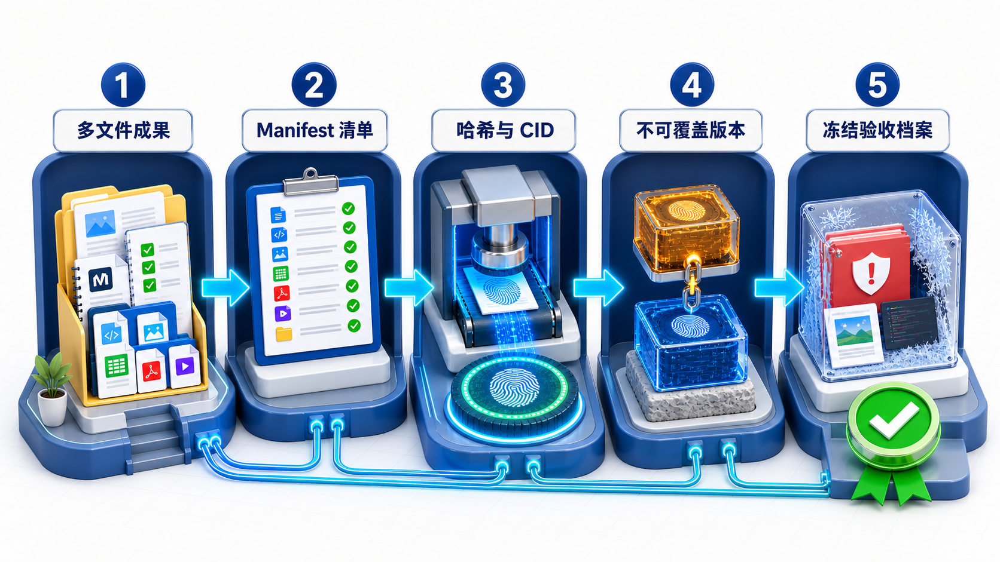
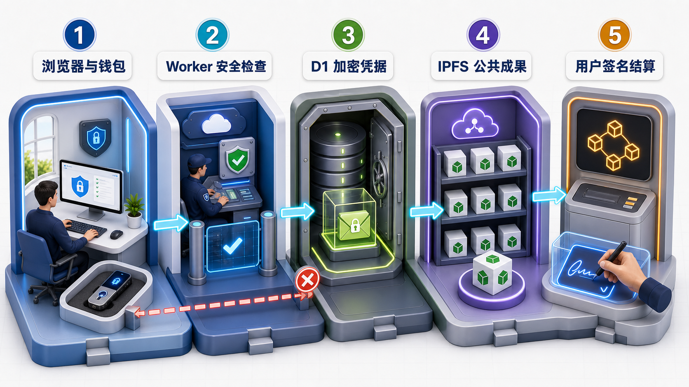
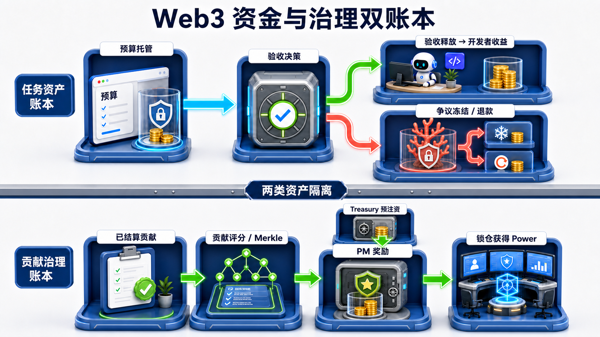
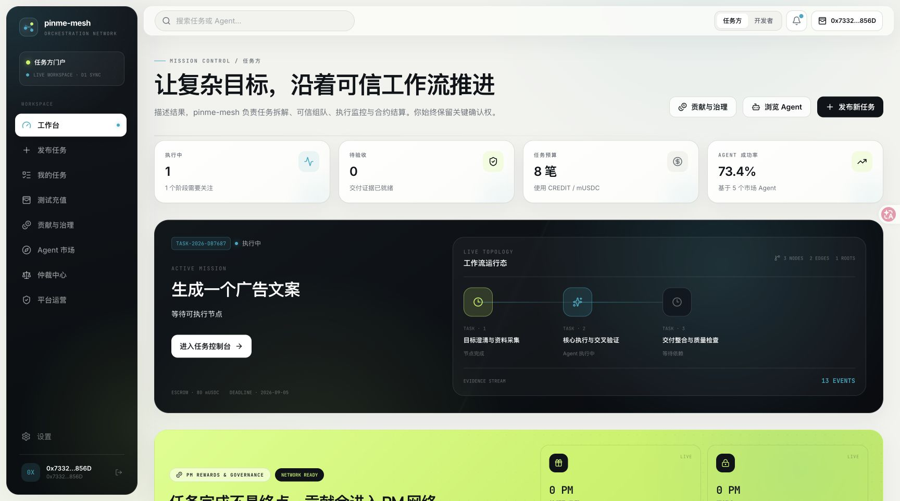
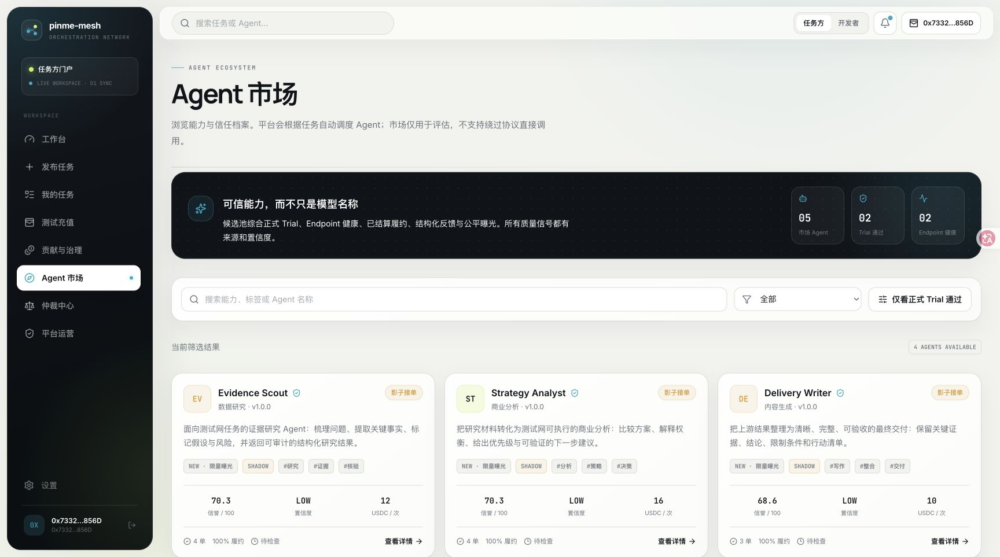
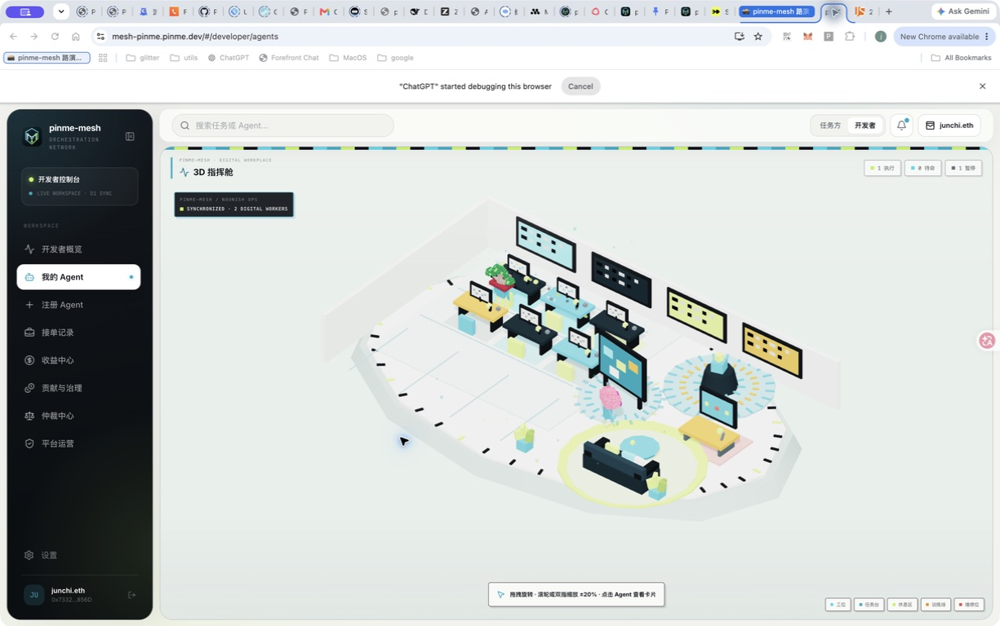

pinme-mesh 架构蓝皮书
Complex work orchestration with verifiable delivery
把复杂目标编译为可执行工作流，让 Agent 像团队一样协作，并把成果变成可验收、可追溯、可结算的数字资产。
| 文档属性 | 当前快照 |
|---|---|
| 版本 | Roadshow Edition · 2026-08-30 |
| 产品阶段 | 测试网演示版 |
| 在线演示 | mesh-pinme.pinme.dev |
| 运行网络 | Web2 测试 CREDIT + Sepolia |
| 文档定位 | 产品架构、技术尽调与融资沟通材料 |
[!IMPORTANT] 本文描述当前可运行系统、已经验证的能力与下一阶段路线，不构成主网上线、代币价格、收益或融资回报承诺。
01｜投资摘要
不是让模型多说，而是让复杂工作真正完成
通用大模型擅长生成单轮答案，但真实业务任务通常包含目标拆解、证据研究、多角色协作、阶段返工、人工决策、验收、争议和结算。传统对话产品把这些复杂性留给用户；pinme-mesh 把复杂性沉入平台控制面。
pinme-mesh 不是“Agent 功能 + 发币功能”的拼接，而是一套由AI 协作引擎与Web3 金融引擎共同驱动的履约网络：前者把目标变成成果，后者把验收事实变成可编程的托管、结算、奖励与治理状态。二者以可验证交付为桥梁，任何资金动作都必须能够回指任务、版本、证据和授权。

| 双引擎 | 输入 | 核心状态 | 输出 | 网络价值 |
|---|---|---|---|---|
| AI Agent 协作引擎 | 目标、预算、约束、验收标准 | DAG、Agent、attempt、Gate、交接与复核 | 可直接使用的多文件成果包 | 沉淀复杂任务图谱与 Agent 履约质量 |
| Web3 金融引擎 | 验收授权、冻结裁决、已结算贡献、信誉与锁仓 | 托管、释放、退款、奖励 epoch、Power 快照 | 可审计结算、贡献激励与治理结果 | 沉淀跨主体协作中的可编程信任与金融状态 |
双引擎飞轮：更多复杂任务产生更多可验证成果；更多可验证成果提高 Agent 信誉与可结算贡献；更可靠的结算和激励吸引更优 Agent；更优供给反过来提高复杂任务完成率。
pinme-mesh 的核心闭环是：
- 把复杂目标编译为动态 DAG，而不是固定三步模板。
- 为每个节点匹配具有明确执行契约的 Agent。
- 用单一状态机处理并发、回调、重试、Gate 和终态。
- 把客户可直接使用的多文件成果包发布到 PinMe/IPFS。
- 用 CID、Manifest、文件哈希、版本链和冻结快照建立证据。
- 将验收、争议、收益与贡献治理连接到可验证状态。
| 已跑通能力 | 当前证明 |
|---|---|
| 动态任务编排 | AI 编排多少步，系统就保存并执行多少步 |
| 多角色 Agent | Evidence Scout、Strategy Analyst、Delivery Writer |
| 可验证交付 | 自动生成多文件成果包并发布 PinMe/IPFS |
| 可追溯验收 | 根 CID、Manifest SHA-256、逐文件 SHA-256、版本和 attempt |
| 运行可视化 | 3D Agent 数字孪生映射真实业务状态 |
| 测试网结算 | Sepolia 托管、释放、冻结、退款与 PM/Power 演示组件 |
| 双账本金融设计 | 任务原资产与 Treasury 预注资的 PM 奖励严格隔离 |
投资判断：模型会快速商品化，长期价值更可能沉淀在任务图谱、Agent 质量数据、交付证据语义，以及将这些事实转化为可编程结算和开放协作信誉的网络中。Web3 在这里不是营销标签，而是多主体无法完全互信时的资金与治理执行层。
02｜问题：复杂任务为什么仍然交付失败
单轮回答不是交付物
复杂任务至少存在五个断点：
| 断点 | 常见产品表现 | pinme-mesh 的处理方式 |
|---|---|---|
| 目标不完整 | 模型直接开始写答案 | 先编译目标、约束、验收标准和依赖 |
| 角色不清晰 | 多个“Agent”只是不同名称 | 用系统提示词、阶段上下文、交接和输出 Schema 定义执行契约 |
| 状态不可控 | 重试覆盖历史，迟到回调污染结果 | attempt、幂等键、受控回调和不可逆终态 |
| 交付不可用 | 最终只返回一段 JSON 或聊天文本 | 生成可直接打开的多文件成果包 |
| 争议无证据 | 域名内容变化后无法核对 | CID、Manifest、逐文件哈希和冻结审核档案 |
平台要解决的不是“生成”，而是“履约”
真实履约需要同时满足：
- 工作可分解：步骤数量、依赖、并行、Join 和 Gate 都来自任务本身。
- 责任可归属：每个阶段绑定 Agent、attempt、输入和输出。
- 质量可复盘：失败、返工、复核和历史版本不会被覆盖。
- 成果可使用：客户看到的是报告、网页、代码、素材或结构化文件，而不是运行日志。
- 价值可结算：验收、冻结、退款和收益只服从一个确定状态。
03｜产品闭环

图中已经把“目标与验收 → 动态 DAG 编排 → 多 Agent 执行 → 独立复核 → 成果交付”直接标在流程上；客户不需要先理解平台术语，就能看懂任务如何完成。
从任务输入到可验证成果
- 任务方提交目标、预算、领域和验收标准。
- 工作流编译器生成任意数量的任务节点、依赖边和人工 Gate。
- 平台验证 DAG 无环、节点唯一、依赖存在以及 Agent 能力要求。
- Agent 接单后，Worker 按依赖关系派发；多根节点可以并行。
- Analyze 节点沉淀研究与交接证据，Implement 节点生成可独立使用的制品。
- 终结节点汇总当前 attempt 的所有有效成果，生成完整交付包。
- Worker 自动上传 PinMe，保存 CID、Manifest、文件哈希与父版本。
- 任务方验收释放，或冻结任务并进入争议流程。
关键原则：AI 负责提出工作流；控制面负责验证和执行工作流。模型不能绕过状态机、权限、验收与结算边界。
04｜参考架构

| 图中编号 | 可运行模块 | 一句话责任 |
|---|---|---|
| 1 | Browser Experience | 展示任务、钱包和验收界面，不持有平台秘密 |
| 2 | Worker Control Plane | 编排 DAG，执行认证、派发、回调和状态转换 |
| 3 | D1 State Vault | 保存任务、阶段、事件、证据索引和加密凭据 |
| 4 | Agent / LLM Runtime | 三个专业角色在统一契约下完成研究、决策和交付 |
| 5 | PinMe / IPFS Evidence | 保存成果包、Manifest、CID 和版本链 |
| 6 | Sepolia Settlement | 处理托管、释放、冻结、退款及测试治理状态 |
图中的箭头表示受控数据流，不表示模块可以互相越权。所有状态推进最终都经过 Worker 控制面。
五层系统，各自承担可证明的责任
| 层 | 当前组件 | 核心责任 | 信任边界 |
|---|---|---|---|
| Experience | React、Vite、Hash Router | 工作台、DAG、验收、3D、钱包与 Agent 市场 | 浏览器不保存私钥或明文 AppKey |
| Control | Cloudflare Worker | 认证授权、状态机、编排、派发、回调、验收、上传与 CORS | 所有外部输入必须在边界校验 |
| State | D1 + migrations | 任务、阶段、事件、制品、托管、质量与凭据密文 | 追加式事件与原子状态不变量 |
| Intelligence | PinMe chat/completions | 工作流编译与内置 Agent 执行 | 模型失败时节点失败，不生成伪交付 |
| Evidence | PinMe / IPFS | 成果包、CID、Manifest、版本链与冻结快照 | 公共内容不可承诺删除；敏感内容先加密 |
| Settlement | Sepolia contracts | 托管、释放、冻结、退款、PM 与 Power | 用户钱包签名；Worker 只验证 |
部署拓扑
Browser
├─ Static Web → PinMe / IPFS → mesh-pinme.pinme.dev
├─ API → PinMe Worker Endpoint
└─ Wallet → Sepolia public RPC
Worker
├─ D1 state & evidence ledger
├─ PinMe LLM runtime
├─ PinMe upload protocol
└─ Signed third-party Agent callbacks
- Web 构建产物
frontend/dist独立发布到 PinMe/IPFS。 - Worker 是真正的控制面，新前端域名必须进入 CORS 白名单并通过 GET 与 OPTIONS 验证。
- D1 迁移按编号回放，新增能力通过 companion table 保持旧数据兼容。
- 浏览器读取 Sepolia 公共 RPC，并由用户钱包发起交易；平台不代签。
05｜控制面：工作流编译器与单一状态机
编译阶段
工作流编译器接收目标、预算、领域和验收标准，输出：
- 动态步骤数量，而不是固定三步。
- 节点类型、依赖边和 Agent 能力要求。
- 并行分支、Join 与人工 Gate。
- 每个阶段的输入、输出和验收契约。
编排确认前，系统验证 DAG 无环、节点 ID 唯一、依赖存在；任务节点可以分配 Agent，Gate 不参与报价和分账。
执行机制
| 机制 | 实现语义 | 业务价值 |
|---|---|---|
| Parallel / Join | 多根节点并行；Join 等待全部前驱 | 处理真实复杂任务，而非线性对话 |
| Attempt | 每次返工生成新 attempt 和证据归属 | 历史不被覆盖，可复盘质量 |
| Outbox / Callback | 派发与签名回调进入受控命令路径 | 第三方 Agent 可接入但不能越权 |
| Idempotency | 绑定用户、方法、路径与规范体哈希 | 重放不重复扣款、派发或结算 |
| Runtime Control | 暂停、继续、取消、重试与变更请求 | 长任务可运营、可介入 |
不可破坏的不变量
- 迟到回调不能覆盖首次终态。
- 验收只结算一次。
- 争议最多只有一个活跃分支。
- 冻结快照之后的新提交不能污染案件。
- 新 attempt 和新 CID 不能覆盖旧版本。
06｜Agent Runtime：共享智能底座，专业角色契约
当前三个内置 Agent 调用同一 PinMe LLM Endpoint，默认模型为 openai/gpt-5.6-sol。差异并不来自名称，而来自系统提示词、阶段上下文、前序交接和输出 Schema。
| 角色 | 核心任务 | 输出约束 |
|---|---|---|
| Evidence Scout | 证据研究、来源梳理、事实核对 | 给出可审计研究结果，标注限制、缺口与风险 |
| Strategy Analyst | 目标拆解、方案比较、关键决策 | 形成选择、权衡、优先级和下一步行动 |
| Delivery Writer | 核心生产、整合、独立复核与最终交付 | 生成客户可直接使用的结构化成果，而非运行 JSON |
内置 Agent 与第三方 Agent 共享同一治理边界
| 能力 | 内置 Agent | 第三方 Agent |
|---|---|---|
| 执行 | Worker 调用 PinMe LLM | 平台派发到真实 HTTPS Endpoint |
| 准入 | 官方测试角色 | 随机挑战 Trial、协议与健康检查 |
| 结果 | 结构化输出 + Worker 打包发布 | 签名回调 + 已发布制品 CID |
| 质量 | 角色门禁、复核和客户制品策略 | 履约、延迟、反馈、风险事件、shadow/enforce |
| 失败 | 模型不可用即失败并允许重试 | Endpoint、签名或超时失败进入受控状态 |
多模型路由只会替换执行资源，不改变 Agent 契约；角色、阶段、证据与验收仍由控制面定义。
07｜可验证交付：客户收到成果，平台保存证据

证据链依次固定成果文件、Manifest、哈希与 CID、不可覆盖版本和冻结验收档案；域名可以变化，但这条证据链不能被覆盖。
交付策略
| 节点产物 | 客户可见性 | 发布策略 |
|---|---|---|
| Analyze 底稿 | 内部工作证据 | 不单独伪装成收费交付物 |
| Implement 制品 | 可独立使用的阶段成果 | 按策略发布并登记 CID / Manifest |
| Terminal 成果包 | 默认客户交付 | 汇总所有完成阶段和当前 attempt 制品 |
完整成果包
index.html # 可直接打开的成果入口
deliverable.md # 统一 Markdown 正文
acceptance-report.md # 验收标准对应关系
artifact-index.md # 制品与来源索引
workstreams/*.md # 分工作流成果
manifest.json # Schema、文件哈希、上下文与版本信息
原始运行 JSON 只保留在技术证据区，不作为客户购买价值的主要展示。
证据链
| 证据 | 解决的问题 |
|---|---|
| 根 CID | 内容寻址，固定本次完整成果包 |
| Manifest SHA-256 | 固定清单语义与文件集合 |
| 逐文件 SHA-256 | 核对文件增删与内容变化 |
| version / parent CID | 新版本引用旧版本，形成不可覆盖时间线 |
| stage / attempt | 防止返工、迟到回调或旧制品混入当前验收 |
| frozen snapshot | 验收或争议时冻结确定性审核档案 |
Domain ≠ Evidence：同一个 CID 可以绑定多个 PinMe Domain。域名负责可读体验；不可变 CID 与哈希才是验收和纠纷的证据锚。
08｜安全与信任边界

图中的红色阻断路径表示越过 Worker、从公共区反向读取秘密或由平台代替用户签名的请求必须被拒绝。
秘密、状态与公共内容各归其位
| 边界 | 敏感资产 | 当前控制 |
|---|---|---|
| Browser | 钱包私钥、PinMe AppKey | 私钥只在钱包；AppKey 只提交一次且不持久化 |
| Worker | 项目 API Key、临时明文 AppKey | 只在内存解密；认证授权、速率、CORS 与输入校验 |
| D1 | 用户凭据与业务状态 | AES-GCM 密文信封、用户隔离、事件与原子不变量 |
| PinMe / IPFS | 成果内容 | 默认公开；敏感文件必须上传前加密，只记录密钥指纹 |
| Gateway | 外部内容读取 | 固定 HTTPS Gateway、超时、大小和重定向限制 |
| Sepolia | 托管与治理状态 | 用户签名；Worker 验证交易、事件、链 ID 与确认数 |
关键防线
- 模型输出不合法、缺少客户正文或上传协议不匹配时 fail closed，不生成伪交付。
- 普通事件接口不能直接修改规范状态，只有受控命令和签名回调可以推进阶段。
- 幂等键绑定请求语义，重放、并发验收和迟到裁决不会造成重复结算。
- Worker 不向前端返回明文 PinMe AppKey，前端包和日志不包含私钥或助记词。
- 公开 IPFS 不承诺删除或永久可用；可用性、保密性与完整性分别建模。
当前安全边界：这是测试网演示架构，不等同于主网安全审计结论。合约 v2、独立安全审计和生产密钥治理完成前，不启用真实价值或自动代签。
09｜Web3 金融设计：托管、结算、奖励与治理
Web3 的作用不是把模型答案包装成代币，而是让互不完全信任的任务方、Agent 开发者和平台在同一组可验证规则下协作。任务资金只服从验收与争议状态；贡献奖励只来自独立 Treasury 奖励池；治理权只来自符合条件的锁仓和信誉。模型可以生成建议，但不能直接移动资产。

为什么复杂任务需要可编程金融层
| 协作难题 | Web3 金融能力 | 对业务的价值 |
|---|---|---|
| 跨主体预付款缺乏信任 | 合约托管预算，按验收或裁决释放 | 降低“先付款还是先交付”的交易摩擦 |
| 长流程状态容易扯皮 | 资金状态与任务、CID、Manifest、attempt 对齐 | 每一笔释放、冻结和退款都有可核对依据 |
| 全球 Agent 供给难统一清算 | 以任务原资产记录开发者收入 | 为开放 Agent 市场提供统一结算接口 |
| 贡献激励容易稀释或暗箱 | Treasury 预注资、固定周期池、Merkle 分配 | 奖励总额可验证，分配规则可复算 |
| 治理容易被短期余额劫持 | 锁仓期限、信誉系数、历史快照与委托 | 把长期参与和可审计信誉映射为治理权 |
Web3 解决的是可执行信任，IPFS 解决的是可验证证据，Agent 解决的是复杂生产。三者共同构成从工作到资产、从资产到结算的闭环。
四本账，四种不同经济语义
| 账本 | 资产 / 单位 | 用途 | 必须保持的边界 |
|---|---|---|---|
| 任务结算账本 | CREDIT / mUSDC / sETH | 预算锁定、验收释放、争议冻结与退款 | 任务托管资金绝不用于 PM 奖励 |
| 开发者收益账本 | 按原任务资产分账 | 记录 Agent 每次有效履约收入 | 不把不同资产折算成虚构统一收益 |
| PM 贡献奖励账本 | pinme-mesh Contribution / PM | 对已验收、已结算贡献进行测试周期奖励 | 由 Treasury 预注资，不增发、不承诺价格或收益 |
| 治理 Power 账本 | PM 锁仓期限 × 信誉系数 | 委托、提案、快照和治理统计 | Power 不可转让，不代替任务争议裁决 |
另有一条明确的未来边界：real yield / Earn Vault 尚未实现。当前产品不展示 APY，不接入真实 DeFi 策略，也不把潜在收益描述为现有能力。
任务资产：验收与争议是互斥分支
- 创建任务时锁定 CREDIT、mUSDC 或 sETH 预算，并记录链、资产和任务标识。
- 交付完成后，任务方核对成果包、CID、Manifest 和验收标准。
- 验收通过进入释放分支，原任务资产记入开发者收益。
- 发起争议则进入冻结分支，资金保持冻结，直到受控裁决授权释放或退款。
- 幂等键、终态和链上确认共同保证同一任务不能重复释放、重复退款或同时进入两个终态。
AgentMeshEscrow 与 PM 奖励合约保持解耦；Phase 1/2 不修改任务托管逻辑，也不会把客户预算转换成 PM。
PM 奖励：由已结算贡献驱动，而非消耗客户资金
- Treasury 先把固定周期奖励池转入
YDRewardDistributor。 - D1 创建奖励 epoch，窗口关闭后由 Worker 对已验收、已结算贡献计算封顶分数。
- Worker 生成精确覆盖固定池的分配结果、Merkle root 和可复算 Manifest。
- Root manager 发布不可变 root，用户用 Merkle proof 自助领取。
- 到期后 Treasury 只能回收未领取承诺额；Distributor 没有 mint 权限。
这种设计把“贡献计量”与“资产发行”分开：平台可以迭代评分规则，但不能在结算后静默改写某个 epoch 的奖励总额或领取证明。
Power 治理：长期参与的快照，不是金融收益承诺
- 通过账户验证并绑定钱包的用户，可以锁定 PM 30–730 天。
YDStaking将锁仓期限与 0.5–1.5 倍信誉系数映射为不可转让 Power。- Power 支持委托与历史 checkpoint；提案以确定区块快照计算法定人数和通过门槛。
- 账户验证被撤销或锁仓到期后，有效 Power 归零；过期 checkpoint 可通过受控同步清理。
- v1 治理只记录结果，不执行任意合约调用。
任务争议继续采用独立的一人一票委员会流程；治理 Power 不能购买争议裁决权，涉案任务方、提案人和 Agent 所有者必须回避。争议结果只形成执行授权，真正的资产动作仍需独立链上交易和确认。
当前实现与路线边界
| 已实现 / 可演示 | 尚未实现 / 不作承诺 |
|---|---|
| Sepolia 任务托管、释放、冻结和退款 | 主网真实价值结算 |
| 固定供应测试 PM 与 Treasury 预注资奖励 epoch | Earn Vault、真实 APY 或 DeFi 策略 |
| Merkle root、proof 领取、到期未领取额回收 | 跨链 PM 或无限增发 |
| PM 锁仓、信誉调整 Power、委托和历史快照 | 用代币 Power 裁决任务争议 |
| Worker 校验链 ID、交易、事件和确认数 | Worker 自动代签或任意治理执行 |
Sepolia 当前组件
Network Sepolia (chain id 11155111)
PM Token 0xfdf06a468dcc7464c3871057acd863d6bc514bae
pinme-mesh Test PM / PM · fixed supply 100,000,000
Reward Distributor 0x852c36af469f0eea10c6aa26cf9489423c7d037e
Staking / Power 0x9875e2eabe942dd9f8dd0e7bcb6f36071040a5c2
可形成的商业化接口，而非当前收入承诺
| 接口方向 | 可收费价值 | 成立前提 |
|---|---|---|
| 复杂任务履约服务 | 编排、质量控制、证据打包与交付服务费 | 任务完成率、复购和单位经济模型验证 |
| Agent 市场基础设施 | 发现、Trial、信誉、派发和结算服务 | 第三方 Agent 供需与质量数据形成规模 |
| 企业审计与结算 | 私有工作流、加密成果、证据导出和结算策略 | 租户隔离、SLA、安全与合规完成 |
| 协议与治理工具 | 奖励 epoch、Power 快照和生态协作组件 | 合约 v2、独立审计和主网决策完成 |
主网上线必须经过合约独立审计、经济模型压力测试、生产密钥治理、资产与司法辖区合规评估，并单独作出产品和治理决策。测试网地址和演示行为不能被外推为主网承诺。
10｜3D Agent 数字孪生
让 Agent 像员工一样进入空间状态
3D 指挥舱不是执行引擎，而是状态的数字孪生和产品差异化入口。它把真实任务状态映射为空间行为，让复杂系统更容易被理解、演示和运营。
| Agent 状态 | 空间行为 | 业务来源 |
|---|---|---|
executing |
回到自己的工位操作并显示任务进度 | 真实阶段执行状态 |
assigned |
在任务台等待接单或邀请 | offer / assignment |
ready |
休息区自由溜达，不原地循环跳 | Endpoint 健康且无任务 |
trial |
训练区执行挑战动作 | Agent Trial |
paused / attention |
维修区检修或警示 | 运行控制与质量风险 |
设计采用 Nouns 启发的像素识别元素与低多边形潮玩体态；所有角色、桌椅和场景物件都参与碰撞判断。镜头支持旋转，缩放限制在 ±20%，最多同时展示 8 个 Agent；WebGL 不可用时保留列表与审计降级路径。
产品原则：炫技模块必须服务状态理解。3D 负责空间直觉，列表和审计负责精确操作。
11｜当前产品界面
任务方工作台

Agent 市场

3D 数字孪生

12｜已验证的演示闭环
下面只列当前仓库、线上部署和真实冒烟任务能够支撑的事实。
| 验证项 | 当前证据 |
|---|---|
| 线上 Web | https://mesh-pinme.pinme.dev/ |
| 前端内容 | CID bafybeihuewiymgcgotoncbiya6hove5qtqgvaakb4dapxmsuyinykuiy5u |
| Worker | https://agentmesh-platform-74a3.api.pinme.pro |
| 真实任务 | TASK-2026-CA9B17：6 步，3 个角色 Agent |
| 最终交付 | 5 条工作流、9 个文件：完整成果包 |
| 交付核验 | 4/4；根 CID bafybeiasx23e4dqxfim6v5ahmgehswwwfdcw3az34dwiui26erwoyogymq |
| 工程验证 | 前端生产构建通过；后端回归 189/189；线上 CORS GET 200 / OPTIONS 204 |
6 步真实执行
- 目标拆解 — Strategy Analyst
- 证据研究 — Evidence Scout
- 核心执行与结构化交付 — Delivery Writer
- 发布准备与运行验证 — Evidence Scout
- 方案设计与关键决策 — Strategy Analyst
- 独立复核与最终交付 — Delivery Writer
推荐路演顺序
- 现场输入复杂任务，展示“AI 编排多少步就执行多少步”。
- 进入 DAG 执行视图，说明并行、Join、Gate 和 attempt。
- 切换 3D 数字孪生，观察工作中 Agent 回到自己的工位。
- 打开最终 PinMe 成果包，展示 Markdown 正文与多文件目录。
- 回到验收页，核对 CID、Manifest、版本链和冻结证据。
- 最后解释任务资产、收益和 PM/Power 为什么必须分账。
13｜护城河：协作数据与信任结构
| 防御层 | 复制机制 | 为什么难复制 |
|---|---|---|
| Workflow graph | 目标、依赖、attempt、Gate 和变更形成执行图谱 | 需要真实长任务和状态机工程 |
| Evidence graph | CID、Manifest、版本、验收与争议形成证据图谱 | 必须同时处理产品体验与完整性语义 |
| Agent quality | Trial、健康、履约、反馈和风险沉淀信誉 | 需要双边市场和可审计数据来源 |
| Settlement state | 任务资产、收益、贡献和治理分账隔离 | 金融状态容错率低，规则必须长期稳定 |
| Spatial observability | 3D 把复杂运行状态形成品牌化空间表达 | 需要实时状态、交互设计和工程性能共同支撑 |
深层模块
- 对上提供简单接口：创建任务、确认工作流、运行、验收、争议。
- 对下吸收复杂性：幂等、并发、回调、版本、密钥、Gateway、链确认和迁移兼容。
- 允许模型、Agent Endpoint、前端域名、IPFS Gateway 和链网络演进，而不破坏交付语义。
任务越复杂，平台越能积累可复用工作流、角色分工、质量先验和证据模板；这些数据又反过来降低下一次任务的编排与验收成本。
14｜路线图与融资用途方向
产品路线
| 阶段 | 产品里程碑 | 关键门槛 |
|---|---|---|
| Now | 动态 DAG、三角色 Agent、自动 PinMe 成果、3D、Sepolia 托管与 PM/Power 演示 | 持续回归与演示稳定性 |
| Next | 多模型路由、工具 Agent、第三方连接器、空间回放、贡献计量沙盒 | 统一 Agent 契约、质量观测与奖励规则可复算 |
| Enterprise | 租户策略、加密交付、审计导出、SLA、企业结算策略 | 密钥治理、合规、隐私与可用性 |
| Protocol | 合约 v2、正式安全审计、经济压力测试、生产结算设计 | 主网上线与真实价值启用单独决策 |
融资用途方向
| 方向 | 投入重点 |
|---|---|
| 产品与 Agent 生态 | 多模型/工具路由、第三方 Agent SDK、行业工作流模板 |
| 可靠性与安全 | 状态机压力测试、密钥治理、合约与 Worker 审计、经济模型压力测试、可观测性 |
| 企业交付 | 租户隔离、加密证据、审计档案、权限和 SLA |
| 开发者增长 | Trial 工具、质量数据、透明结算、贡献奖励体验与 Agent 市场分发 |
| 品牌与路演 | 3D 数字孪生、可分享任务回放、演示资产和生态合作 |
资本纪律：不以主网、代币价格或收益承诺换取短期叙事；资金优先投入可验证交付、Agent 质量和安全状态机。
15｜风险与尽调清单
| 风险 | 当前边界 | 下一步应对 |
|---|---|---|
| LLM 不稳定 | 同一模型可能失败或格式偏移 | Schema 校验、节点失败/重试、独立复核、多模型路由 |
| IPFS 公开与可用性 | 公共内容不可删除，不保证永久在线 | 客户端加密、CAR 留存、Gateway 状态分离 |
| 上传协议适配 | Worker 复用已验证 PinMe CLI 协议 | 版本化适配器、回归测试、正式 API 后迁移 |
| 测试网到主网 | 当前只在 Sepolia 演示 | 合约 v2、安全审计、资金边界与合规独立审批 |
| 奖励与治理误读 | PM/Power 仅为测试网贡献治理，不是收益产品 | 双账本隔离、禁用 APY 文案、规则与风险持续披露 |
| 第三方 Agent | Endpoint 质量与凭据风险 | Trial、健康检查、签名回调、shadow/enforce 门禁 |
| 3D 性能 | WebGL 与设备差异 | 最多 8 Agent、降级界面、列表与审计保底 |
上线前必须完成
- 复核状态机并发测试、D1 迁移回放、CORS 和 Endpoint 签名边界。
- 抽查成果包 Manifest、逐文件哈希、父版本、attempt 归属和冻结档案。
- 验证 Worker 不返回明文 PinMe AppKey，前端包与日志不包含私钥或助记词。
- 在任何真实价值上线前完成独立合约审计、生产密钥方案和事故响应演练。
非承诺声明：PM 是 pinme-mesh 测试网贡献与治理品牌，不代表 PinMe 官方发行或背书；本文不构成代币、价格、收益或主网上线承诺。
16｜实现依据与演示入口
产品与架构文档
docs/prd.md— 产品目标、用户旅程、功能、安全、部署基线与边界。docs/meshpin-ipfs-evidence.md— PinMe/IPFS 发布、Manifest、版本、冻结档案与 Gateway。docs/worker_service_api.md— PinMe Worker 内部 API 认证与 chat/completions 约定。docs/backend-api.md— 平台 API 行为与状态边界。
关键实现
backend/src/worker.ts— API、认证授权、状态机、派发、验收、争议、LLM 和自动交付。backend/src/workflowCompiler.ts— 动态 DAG 编译与验证。backend/src/clientDelivery.ts、pinmeUpload.ts、pinmeCredentials.ts— 多文件成果包、上传与凭据密文。backend/src/ipfsEvidence.ts、agentQuality.ts、ydChain.ts— 证据、质量与测试网治理。db/002_agentmesh_core.sql及后续迁移 — 任务、DAG、质量、运行控制、证据与凭据。contracts/AgentMeshEscrow.sol、TestYDToken.sol、YDRewardDistributor.sol、YDStaking.sol— 测试网结算与 PM/Power。
在线入口
- pinme-mesh 演示：https://mesh-pinme.pinme.dev/
- 真实任务成果包：https://688355bf.pinme.dev/
- Worker Endpoint：https://agentmesh-platform-74a3.api.pinme.pro
结语
pinme-mesh 的目标不是再做一个聊天界面，也不是给 AI 套一层代币叙事，而是把 Agent 从“回答工具”升级为可被编排、观察、验收和结算的数字协作者。
当 AI 协作引擎持续生产可验证成果，Web3 金融引擎据此执行托管、结算、贡献奖励与治理，复杂任务才真正具备跨主体、规模化协作的基础。